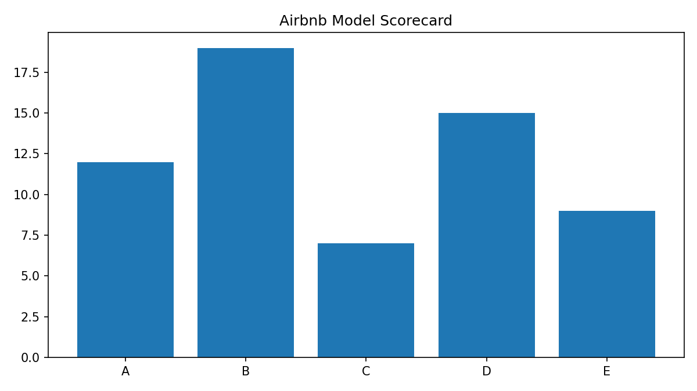

Project Evaluation: Unit 6 Proposal vs Unit 11 Final Project
The Unit 6 proposal focused on applying machine learning to Airbnb listing data in order to understand pricing behaviour and identify practical market segments. At proposal stage, the project was framed in a relatively linear way: clean the data, run regression, test clustering, and produce recommendations.
By the final project, the work had become more mature. The analysis recognised that pricing behaviour was influenced by multiple interacting variables and that insight generation required more than a single model. Regression was useful for identifying strong predictors such as borough and room type, while clustering added value by identifying different operational segments. The final project was stronger because it moved from a method-led approach to an insight-led approach.
